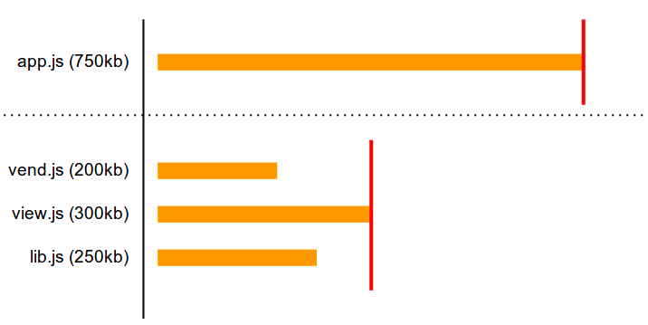
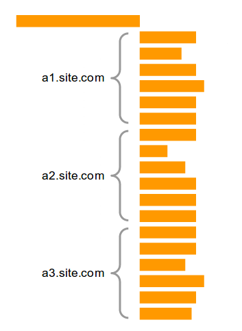
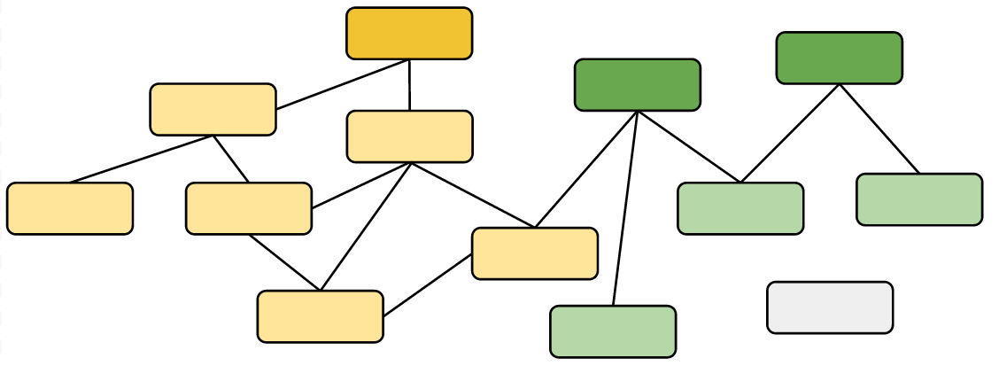
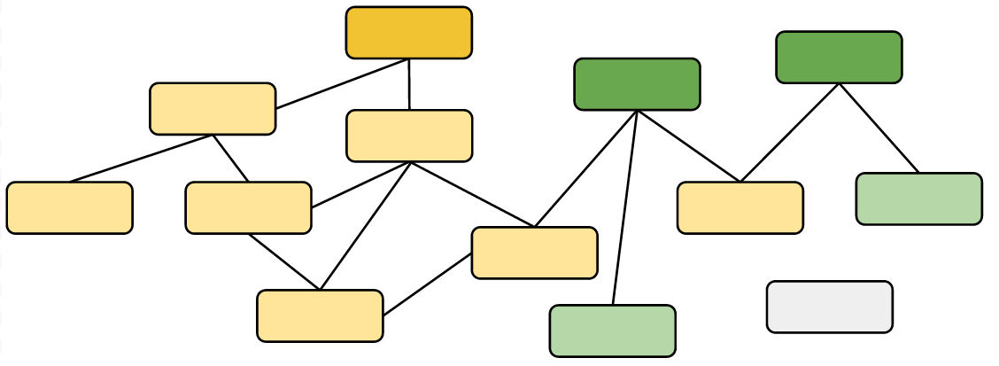
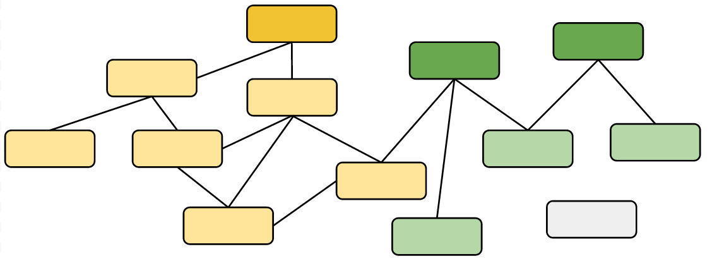
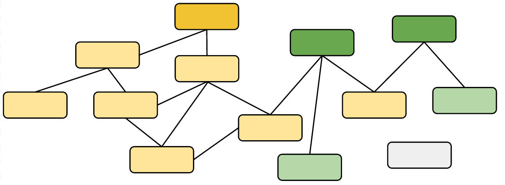

Build Yrself Clean
From source to browser, making it fast
Nick Fisher @spadgos
About me


A short history
The web has come
a long way
 http://www2.warnerbros.com/spacejam/movie/jam.htm
http://www2.warnerbros.com/spacejam/movie/jam.htm

1865
Modular code
RequireJS, Browserify
Better tools for builds: r.js
Optimisation
Reducing size & HTTP requests by minification
Improve network performance
Improve runtime performance
Let's get down to business...
Asset hashing
Previous solutions
<img src="/imgs/my-image.jpg?v=1">
<script href="/scriptz.js?t=1381047402">
A better solution
Use an identifying hash
Checksum of contents, Git commit SHA, whatever
/src/imgs/my-image.jpg --> /target/imgs/my-image-1a2b3c.jpg
Simplifies caching: cache forever!
Multiple versions side by side
<img src="/imgs/my-image-1a2b3c.jpg">
Find and rewrite
Helper function: __ASSET()
var imgPath = __ASSET('/imgs/my-image.jpg');
During development:
function __ASSET(path) { return path; }
During production, removed altogether.
Quick digression: ASTs
Abstract syntax trees
Tree representation of the structure of code
if (x > 100) return y;
else return z;
AST Manipulation
var imgPath = __ASSET('/imgs/my-image.jpg');
var ast = Uglify.parse(fileContents); ast.transform( Uglify.TreeTransformer(function (node) { if (node instanceof Uglify.AST_Call) { if (node.expression.name === '__ASSET') { return new Uglify.AST_String({ value: addAssetHash(node.args[0].value) }); } } }) );
var imgPath = '/imgs/my-image-1a2b3c.jpg';
A small downside
No dynamic naming.
defaultImgs = {
'20x20': __ASSET('imgs/default_20x20.png'),
'50x50': __ASSET('imgs/default_50x50.png'),
'90x90': __ASSET('imgs/default_90x90.png')
};
A small upside: you now have explicit dependencies
Bucketing scripts


Parallel loading
More effective caching

Domain sharding

Per domain connection limits
Chrome, Firefox, Safari, Opera: 6 per domain
IE: 8 per domain
Median # of requests to one domain: 39
browserscope.orgstevesouders.com/blog
HTTP Archives at BigQueries
Waterfall of doom

Split assets across multiple domains
Asset rewriting
__ASSET('/imgs/bullet.png')
'//a1.site.com/imgs/bullet-1a2b3c.png'
__ASSET('/imgs/logo.png')
'//a3.site.com/imgs/logo-4d5e6f.png'
Lazy require calls

var URL = require('lib/url'),
View = require('lib/view'),
Router = require('router');
module.exports = View.extend({
onClick: function () {
Router.navigate(
URL.stringify([
baseUrl,
this.id // or whatever
])
);
}
});
var URL = require('lib/url'), // defined here,
View = require('lib/view'), // here,
Router = require('router'); // and here.
module.exports = View.extend({ // only used here,
onClick: function () {
Router.navigate( // here (maybe),
URL.stringify([ // and here (maybe).
baseUrl,
this.id
])
);
}
});
AST transformations again
Step 1: Find all foo = require('bar'), remove.
Step 2: Replace with a delayed and cached call.
var URL,
View,
Router;
module.exports = (View || (View = require('lib/view'))).extend({
onClick: function () {
(Router || (Router = require('router'))).navigate(
(URL || (URL = require('lib/url'))).stringify([
baseUrl,
this.id
])
);
}
});
Targetted builds
Choose your environment
Mobile, legacy, modern...
if (__ENV__ === 'mobile') {
// add touch events, etc
}
if (__ENV__ === 'legacy') { // eg: IE <= 8?
// polyfill ES5 functions, etc
}
var _ = __ENV__ === 'modern'
? require('lodash-modern')
: require('lodash-compat');
Variables can be set at build time
ast.transform(Uglify.Compressor({
global_defs: {
__ENV__: 'modern'
}
}))
Dead code automatically removed during minification
var _ = __ENV__ === 'modern'
? require('lodash-modern')
: require('lodash-compat');
// becomes
var _ = require('lodash-modern');
Page specific packages
What?
Split modules into 'core' and 'page specific'
Why? When?
When your total size is getting too large.
When low traffic pages contain a lot of unique code.
How?


 


